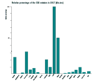
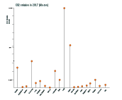
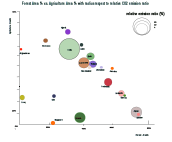

Data Source: Here
The selected datasets contains the CO2 emission amount (in kilo-ton), the percentage of land the cover by forest, and the percentage of land used for agriculture in 2017. The below table and three charts are ploted based on those data for a selected 20 countires. Vriables can be transformed, for example taking the relative percentage, to best acconmmendate the nature of chart.
The bar chart shown the relative percentage of the CO2 emission of the 20 countries, it was transformed from raw emission amount as the original data has a large range. We can see that Japan, Germany, Canada and Indonesia are about 50%-25% of India. The rest of the countries are relative trival compared with other major contributor countries, which is about 10%-0.1% of the maximum.
InkScape Design
D3 Implementation
The Lollipop chart shows those emission amount compared with the word average level. The average level is at 170,000 kt in 2017. We can see that over half of those countries are below the average. And For countries like Canadam Germany, Japan, and India, they contributed significantly, and is way higher than average.
InkScape Design
D3 Implementation
The bubble chart display the scatter position of the 20 countries based on their Agriculture Area% and Forest Area%, with bubble radius representing the emission amout. We can abserve that there is a general inverse relation between Agriculture Area% and Forest Area%.
We can see that the size of bubble does not show string correlation with either forest area% and agriculture area%. Therefore, it is likely that the land use % of forst and agriculure is not determinent to CO2 emission
InkScape Design
D3 Implementation
The below are the timeline chart for the last 5 fall semesters. Common Events are: registration deadline date, class begin date, class end date, study days, exams periods, winter recess period. The holidays are Labor Days, Thanksgiving days, fall recess, but depends on specific semesters. Most of the fall semesters has at least 70 instructional days, except fall 2020, possibly due to the pendamic reason.